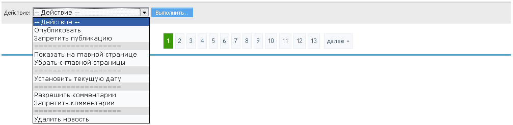
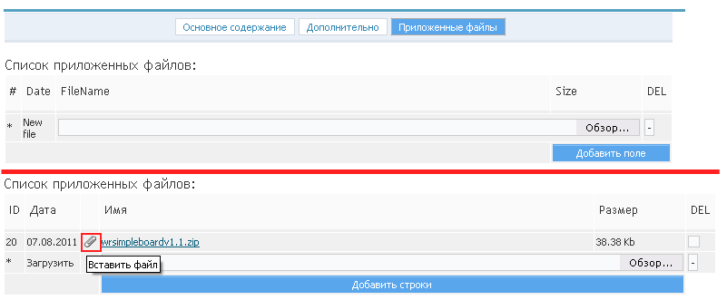

Работа с новостями
Данный компонент позволяет организовать и вести ленту новостей по типу онлайн-СМИ.
Множество настроек визуализации и листинга, возможность подключить комментарии пользователей и систему оценок материалов пользователями.
Применяется как на новостных проектах, так и на корпоративных, например, для освещения событий на рынке. Поддержка тегов (меток).
Компонент предусматривает возможность поиска по новостям и их сортировку по различным критериям. (рис 3.1).

рис 3.1
Для удобства были созданы инструменты массового управления новостями. (рис 3.2).

рис 3.2
Добавление новости
Для добавления новости, нажмите на ссылку "Добавить" в верхней информационной панели (рис 3.3).

рис 3.3
После этого вы будете перенаплавлены на страницу с формой, которую вам потребуется заполнить.
Внимание: в новости поля Заголовок и Текст новости являются обязательными для заполнения!.
Заголовок - указывается название новой страницы. Данные заголовка являются содержимым тега Title, которое показывается в заголовке окна браузера.
Текст - собственно, сам текст новости.
Альт. имя - здесь необходимо указать ссылку на данную страницу. Внимание: ссылка должна указываться на латинице и не содержать спецсимволов и пробелов.
Описание - используется при создании краткого описания страницы, используется поисковыми системами для индексации.
Ключевые слова - ключевые слова для метатега keyword.
- Опубликовать - в случае выбора данного флага, данная новость будет отображаться на сайте.
- Отобразить на главной - в случае выбора данного флага, данная новость не будет отображаться на главной странице сайта.
- Прикрепить - в случае выбора данного флага, данная новость будет отображаться первой на старнице.
- Добавить в закладки - в случае выбора данного флага, данная новость будет добавлена в закладки (используется плагин favorites).
- Разрешить использовать HTML теги - в случае выбора данного флага, в теле страницы, помимо bb кодов можно будет использовать html теги.
- Отключить автоформатирование - в случае выбора данного флага, будет отключено автоформатирование текста, перенос строк и прочее.
-
Комментарии - используется при работе с плагином comments, возможно 3 варианта:
запретить - комментарии будут запрещены
разрешить - комментарии будут разрешены
по умолчанию - флаг разрешения/запрета комментариев будет браться из настроек главной категории новости.
При добавлении новости можно выбрать одну или несколько категорий. При просмотре, новость будет отображаться в каждой из них. (рис 3.4).

рис 3.4
При выборе вкладки "Дополнительно" отображается страница, с настройками даты и времени публикации. Также на этой странице расположены настройки сторонних плагинов, таких как tags, xfields и других.

рис 3.5
BB-коды, доступные в движке
- [b] ... [/b] - выделить текст жирным шрифтом (аналог HTML тега <b> ... </b>)
- [u] ... [/u] - выделить текст подчеркиванием (аналог HTML тега <u> ... </u>)
- [i] ... [/i] - выделить текст курсивом (аналог HTML тега <i> ... </i>)
- [s] ... [/s] - зачеркнуть текст (аналог HTML тега <s> ... </s>)
- [p] ... [/p] - выделить абзац (аналог HTML тега <p> ... </p>)
- [ul] ... [/ul] - тег форматирования (аналог HTML тега <ul> ... </ul>)
- [ol] ... [/ol] - тег форматирования (аналог HTML тега <ol> ... </ol>)
- [li] ... [/li] - тег форматирования (аналог HTML тега <li> ... </li>)
- [left] ... [/left] - отцентровать текст по левому краю (аналог HTML тега <p style="text-align: left;"> ... </p>)
- [right] ... [/right] - отцентровать текст по центру (аналог HTML тега <p style="text-align: center;"> ... </p>)
- [center] ... [/center] - отцентровать текст по правому краю (аналог HTML тега <p style="text-align: right;"> ... </p>)
- [code] ... [/code] - выделить программный код (аналог HTML тега <code> ... </code>)
- [quote] ... [/quote] - выделить цитату
- [quote=ИМЯ] ... [/quote] - выделить цитату указав в качестве автора цитаты - ИМЯ
- [acronym] ... [/acronym] - выделить акроним (аналог HTML кода <acronym>...</acronym>
- [acronym=ОПИСАНИЕ] ... [/acronym] - выделить акроним с описанием(аналог HTML кода <acronym title="ОПИСАНИЕ">...</acronym>
- [email] АДРЕС [/email] - добавить ссылку на e-mail адрес АДРЕС
- [email=АДРЕС] ОПИСАНИЕ [/email] - добавить ссылку на e-mail адрес АДРЕС указав в качестве описание - ОПИСАНИЕ. При этом адрес может браться в двойные кавычки
- [img=ССЫЛКА ФЛАГИ] ОПИСАНИЕ [/img] - добавить картинку расположеную по адресу ССЫЛКА с описанием ОПИСАНИЕ установив флаги ФЛАГИ
Можно использовать следующие флаги (значение флагов можно брать в кавычки), при этом наличие флагов - не обязательно:
width - ширина картинки
height - высота картинки
border - толщина рамки вокруг картинки
align - расположение картинки, может быть: left, right, center
class - к какому CSS классу должна принадлежать картинка
Пример: [img=http://htmlbook.ru/images/title.gif width=50 height="60" border=0 align=left]описание картинки[/img] - [img ФЛАГИ]ССЫЛКА[/img] - по аналогии с предыдущим пунктом, но описание будет генерироваться автоматически, в него пропишется имя файла (без пути)
- [url=ССЫЛКА ФЛАГИ] ОПИСАНИЕ [/url] - добавить ссылку на ресурс, расположеный по адресу ССЫЛКА с описанием ОПИСАНИЕ установив флаги ФЛАГИ
Можно использовать следующие флаги (значение флагов можно брать в кавычки), при этом наличие флагов - не обязательно:
target - имя окна или фрейма куда браузер загружает данные (обычно используется окно со служебным именем _blank - открыть ссылку в новом окне)
class - к какому CSS классу должна принадлежать картинка
Пример: [url=http://htmlbook.ru/ target="_blank"]HTMLBook - документация по HTML[/url] - [url ФЛАГИ]ССЫЛКА[/url] - по аналогии с предыдущим пунктом, но описание будет генерироваться автоматически, оно будет соответствовать ссылке
Добавление изображения/файла к новости
Для добавления изображения к новости требуется нажать на соответствующую иконку на панели bb тегов. (рис 3.6).
рис 3.6

рис 3.7
- Непосредственно Для добавления файла к новости требуется нажать на соответствующую иконку на панели bb тегов. (рис 3.8).
- При помощи аттачментов Чтобы прикрепить определённый файл к новости, нужно выбрать вкладку "Приложенные файлы" и отметить нужные для загрузки файлы.

рис 3.8

рис 3.9
После публикации новости файлы автоматически будут загружены и их можно будет вставлять в новость, путём нажатия на иконку "Вставить файл".(рис 3.10).

рис 3.10
Редактирование новости
Редактирование новости имеет все теже самые настройки и опции что и добавление, за исключением вкладки "Комментарии".В этой вкладке отображаются все комментарии, которые были добавлены к данной новости.
Инструмент позволяет быстро удалить/отредактировать их, либо заблокировать IP комментатора. (рис 3.11).

рис 3.11

рис 3.12